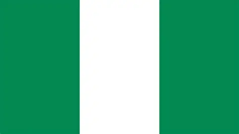

Eneche John
About Me
Thank you for your presence, My name is Eneche John,I am from kogi state,NIgeria and a committed professional,having a background in engineering with a strong link to process and agriculture.I am driven by a love of invention,sustainability,coummunity involvement and through volunteerism my goal is to create a doable solution that rise communities,advance environmental stewardship and boost agricultural production.
My Country

Nigeria is a country in west Africa and the most populous nation in West Africa.the capital city is Abuja,while Lagos is its largest city and major economic center.Nigeria plays an important role in African politics,business,sport,and culture.the country has a large economy driven by oil/gas,agriculture,trade,technology,and entertainment.Nigeria is known for its cultural diversity,with more than 250 ethnic groups and many languages spoken across the country.